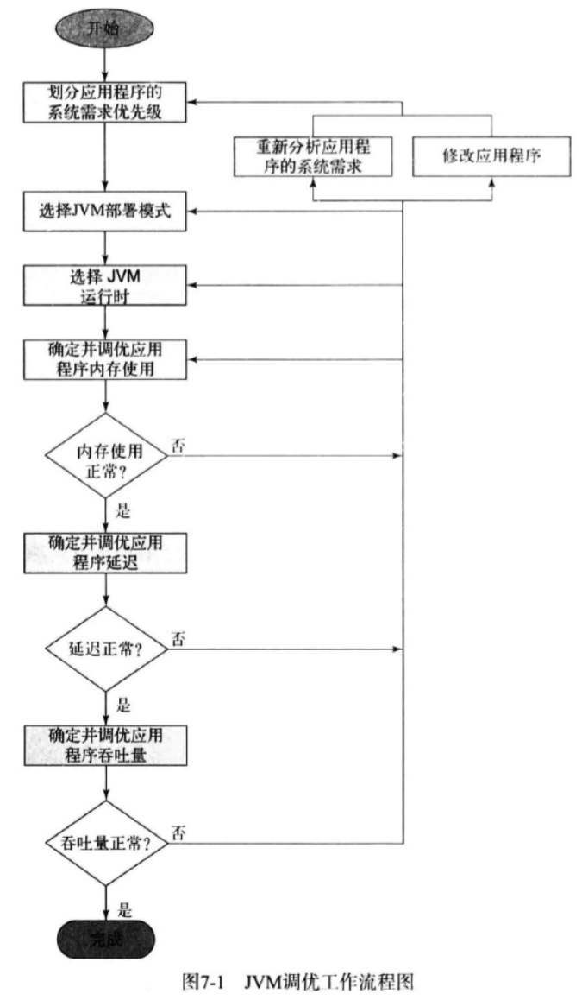

<!DOCTYPE html>
<html>

  <head>
	<meta charset="utf-8">
	<meta http-equiv="X-UA-Compatible" content="IE=edge">
	<meta name="viewport" content="width=device-width, initial-scale=1.0">
	<title>JVM性能调优入门</title>

	<link rel="stylesheet" href="/styles/css/index.css">
	<link rel="stylesheet" href="/styles/css/fontawesome/css/font-awesome.min.css">
	<link rel="canonical" href="/2017/01/04/Java%E6%80%A7%E8%83%BD%E4%BC%98%E5%8C%96%E6%9D%83%E5%A8%81%E6%8C%87%E5%8D%97_JVM%E6%80%A7%E8%83%BD%E8%B0%83%E4%BC%98%E5%85%A5%E9%97%A8/">
	<link rel="alternate" type="application/rss+xml" title="Jun Xi Gu 的博客" href="/feed.xml">
	
	<meta name="description" content="顾俊喜;个人博客">

	<script src="/styles/js/jquery.min.js"></script>
	<!--[if lt IE 9]>
    	<script src="http://html5shiv.googlecode.com/svn/trunk/html5.js"></script>
  	<![endif]-->
  	<script>
		var _hmt = _hmt || [];
		(function() {
		  var hm = document.createElement("script");
		  hm.src = "//hm.baidu.com/hm.js?94be4b0f9fc5d94cc0d0415ea6761ae9";
		  var s = document.getElementsByTagName("script")[0]; 
		  s.parentNode.insertBefore(hm, s);
		})();
	</script>
  	<style type="text/css">
	  	.docs-content{
	  		margin-bottom: 10px;
	  	}
  	</style>
</head>

  <body class="index">

    <header class="navbar navbar-inverse navbar-fixed-top docs-nav" role="banner">
  <div class="container">
    <div class="navbar-header">
      <button class="navbar-toggle" type="button" data-toggle="collapse" data-target=".bs-navbar-collapse">
        <span class="icon-bar"></span>
        <span class="icon-bar"></span>
        <span class="icon-bar"></span>
      </button>
    </div>
    <nav class="collapse navbar-collapse bs-navbar-collapse" role="navigation">
      <ul class="nav navbar-nav">    
        <li>
          <a href="/">主页</a>
        </li>
        <li>
          <a href="/categories/">分类博客</a>
        </li>
        <li>
          <a href="/tag">标签博客</a>
        </li>
      </ul>
      <ul class="nav navbar-nav navbar-right">
        <li class="dropdown">
          <a href="#" class="dropdown-toggle" data-toggle="dropdown">关于<b class="caret"></b></a>
          <ul class="dropdown-menu">
            <li><a rel="nofollow" target="_blank" href="https://github.com/junxigu/">Github</a></li>
            <li><a rel="nofollow" target="_blank" href="https://github.com/luoyan35714/LessOrMore.git">本博客模板</a></li>
          </ul>
        </li>
      </ul>
    </nav>
  </div>
</header>
    <div class="docs-header" id="content">
  <div class="container">
  	
  		<!--
		    <h1>JVM性能调优入门</h1>
		    <p>Post on Jan 04, 2017 by <a href="/about">Jun Xi Gu</a></p>
		-->
		    <h1>Stay Hungry Stay Foolish</h1>
    
  </div>
</div>
    
      
<div class="banner">
  <div class="container">
  	
    	<a href="/categories/#技术-ref">技术</a>	/
    	<a href="/tag/#JVM-ref">JVM</a>
    
  </div>
</div>

    

    <div class="container docs-container">
  <div class="row">
    <div class="col-md-3">
      <div class="sidebar hidden-print" role="complementary">
        <div id="navigation">
  <h1>目录</h1>
  <ul class="nav sidenav">
<!--
    
      
      
      
      

      
        <li><a href="#year_2017">2017</a>
          <ul class="nav">
            <li><a href="#month_2017_May">May</a></li>
      

      
            
          
        
      
    
      
      
      
      

      

      
            
          
              <li><a href="#month_2017_February">February</a></li>
          
        
      
    
      
      
      
      

      

      
            
          
        
      
    
      
      
      
      

      

      
            
          
              <li><a href="#month_2017_January">January</a></li>
          
        
      
    
      
      
      
      

      

      
            
          
        
      
    
      
      
      
      

      

      
            
          
        
      
    
      
      
      
      

      

      
            
          
        
      
    
      
      
      
      

      

      
            
          
        
      
    
      
      
      
      

      

      
            
          
        
      
    
      
      
      
      

      

      
            
          
        
      
    
      
      
      
      

      

      
        
            </ul>
          </li>
          <li><a href="#year_2016">2016</a>
            <ul class="nav">
              <li><a href="#month_2016_December">December</a></li>
        
      
    
      
      
      
      

      

      
            
          
        
      
    
      
      
      
      

      

      
            
          
        
      
    
      
      
      
      

      

      
            
          
        
      
    
      
      
      
      

      

      
            
          
              <li><a href="#month_2016_November">November</a></li>
          
        
      
    
      
      
      
      

      

      
            
          
        
      
    
      
      
      
      

      

      
            
          
        
      
    
      
      
      
      

      

      
            
          
        
      
    
      
      
      
      

      

      
            
          
        
      
    
      
      
      
      

      

      
            
          
        
      
    
      
      
      
      

      

      
            
          
              <li><a href="#month_2016_October">October</a></li>
          
        
      
    
      
      
      
      

      

      
            
          
              <li><a href="#month_2016_September">September</a></li>
          
        
      
    
      
      
      
      

      

      
            
          
        
      
    
      
      
      
      

      

      
            </ul>
          </li>
      
    
-->
  </ul>
</div> 
      </div>
    </div>
    <div class="col-md-9" role="main">
      <div class="panel docs-content">
        <div class="wrapper">
            <header class="post-header">
              <h1 class="post-title">JVM性能调优入门</h1>
              <!--
                <p class="post-meta">Jan 4, 2017</p>
              -->
              <div class="meta">Posted on <span class="postdate">Jan 04, 2017</span> By <a target="_blank" href="">Jun Xi Gu</a></div>
              <br />
            </header>
            <article class="post-content">
              <ul id="markdown-toc">
  <li><a href="#应用的系统需求" id="markdown-toc-应用的系统需求">应用的系统需求</a></li>
  <li><a href="#jvm调优的步骤" id="markdown-toc-jvm调优的步骤">JVM调优的步骤</a></li>
  <li><a href="#jvm-gc调优" id="markdown-toc-jvm-gc调优">JVM GC调优</a>    <ul>
      <li><a href="#gc的自适应调优" id="markdown-toc-gc的自适应调优">GC的自适应调优</a>        <ul>
          <li><a href="#并行gc调优建议" id="markdown-toc-并行gc调优建议">并行GC调优建议</a></li>
          <li><a href="#g1调优建议" id="markdown-toc-g1调优建议">G1调优建议</a></li>
        </ul>
      </li>
      <li><a href="#复杂的gc调优" id="markdown-toc-复杂的gc调优">复杂的GC调优</a></li>
      <li><a href="#调优gc并确定jvm内存使用量" id="markdown-toc-调优gc并确定jvm内存使用量">调优GC并确定JVM内存使用量</a></li>
      <li><a href="#调优gc延迟" id="markdown-toc-调优gc延迟">调优GC延迟</a>        <ul>
          <li><a href="#对并行gc的调优" id="markdown-toc-对并行gc的调优">对并行GC的调优</a></li>
          <li><a href="#对cms的调优" id="markdown-toc-对cms的调优">对CMS的调优</a></li>
        </ul>
      </li>
      <li><a href="#调优gc的吞吐量" id="markdown-toc-调优gc的吞吐量">调优GC的吞吐量</a></li>
      <li><a href="#gc调优用到的命令行参数" id="markdown-toc-gc调优用到的命令行参数">GC调优用到的命令行参数</a></li>
    </ul>
  </li>
  <li><a href="#参考文献" id="markdown-toc-参考文献">参考文献</a></li>
</ul>

<p><strong>本文是对JVM性能调优的基本知识的汇总和个人理解</strong></p>

<hr />

<p><strong>为什么需要JVM调优？</strong></p>

<p>JVM上运行的应用多种多样，JVM为了满足应用不同的行为特征和性能需求，提供了很多配置，应用可以按照其特点来配置JVM获得更好的性能</p>

<p><strong>什么是JVM调优？</strong></p>

<p>根据应用的行为特征来配置JVM的启动参数，让应用获得其需要的性能<br />
性能数据一般包括：应用启动时间，内存使用量，吞吐率，延迟</p>

<h2 id="应用的系统需求">应用的系统需求</h2>

<p>在进行JVM调优之前，首先要确定应用的系统需求，这个需求应该在设计阶段已经定义好了，系统需求包括：</p>

<ul>
  <li>吞吐量：单位时间内应用处理的工作量</li>
  <li>响应时间：是指不考虑吞吐量的影响，应用接收到指令后开始工作直到完成的时长，</li>
  <li>内存消耗：同等的吞吐量，响应时间，可用性和可管理性的条件下的内存消耗</li>
  <li>启动时间：应用初始化所需要的时间</li>
  <li>可用性：可以理解成健壮性，当系统的某些部分不能工作以后不会影响到系统的其他部分</li>
  <li>可管理性：对维护，运行，部署系统所产生的开销，可用性的提高很可能会牺牲掉可管理型</li>
</ul>

<h2 id="jvm调优的步骤">JVM调优的步骤</h2>

<p>根据定好的系统需求按照流程来对JVM进行调优，调优时应针对系统运行进入稳定阶段的运行情况来调优，以下是JVM调优的步骤(图源自《Java性能优化权威指南》)：</p>

<p></p>

<ol>
  <li>JVM调优涉及到多种系统需求，每个需求其实是一个取舍，为了满足某个需求必定为牺牲另外一个需求，所以在调优之前应该清除不同系统需求之间的优先级</li>
  <li>接着是根据 可用性，可管理性和内存使用量 来确定JVM部署模式，在单个JVM上部署应用能增加应用的可管理性，但不利于应用的可用性和单个JVM的内存使用量</li>
  <li>接着是根据 吞吐量、响应时间、启动时间，内存使用量 来选择JVM运行时，例如Server JVM能更好的满足吞吐量和响应时间，但牺牲了启动时间来进行优化，32位的JVM能提供更快启动时间和更少内存使用量</li>
  <li>然后按步骤根据内存使用量、应用的停顿和应用的吞吐量 来对JVM的GC进行调优</li>
</ol>

<p>由于调优的某个过程会影响到先前的系统需求、或者为了达到某个需求需要调整以前步骤的调优，所以调优的过程是一个重复多次步骤的过程</p>

<h2 id="jvm-gc调优">JVM GC调优</h2>

<p><strong>优化GC是什么？</strong></p>

<p>GC是个自动的内存管理工具，它根据一些参数来调整自己的行为，比如触发垃圾收集的阈值等</p>

<p>CG优化就是通过改变某些参数来使得GC的行为让应用程序的性能指标(吞吐率和延迟)达到用户预期</p>

<p><strong>为什么需要优化GC？</strong></p>

<p>一般情况下，JVM会根据机器的性能选用某种合适的GC，并根据应用运行情况动态地对GC进行一定的优化，但当应用有特别的需求时，开发人员应该根据应用的特殊情况来选择合适的GC并进行人工优化</p>

<p><strong>怎么样优化GC？</strong></p>

<p>JVM根据不同的应用和应用的不同行为来调整其功能，尽量使应用的吞吐率和延迟达到一个平衡</p>

<p>GC调优按照应用的需求程度能有不同的调优方法，这些方法从简单到复杂，对应用的性能需求越严格需要进行调整的参数越多</p>

<p>JVM GC调优主要是面向3个性能需求属性：</p>

<ul>
  <li>吞吐量: 不考虑停顿时长和内存占用，垃圾收集器能支撑的应用程序的任务量</li>
  <li>延迟：垃圾收集器导致的应用停顿时长</li>
  <li>内存占用：垃圾收集器顺畅运行所用的内存</li>
</ul>

<p>这些属性都是不可兼得的，只能取舍</p>

<h3 id="gc的自适应调优">GC的自适应调优</h3>

<p>GC的自适应调优对人来说是最简单的，需要的工作量最少，这种调优方法叫人类工程学(Ergonomics 有道翻译)，简单地说就是JVM根据 <em>应用类型</em> 、应用的运行情况和 <em>性能指标</em> 来对JVM和GC进行配置和调整</p>

<p><strong>JVM按照应用类型配置默认功能</strong></p>

<p><em>应用类型</em><br />
按照运行应用的机器性能来把应用分成两类：client型和server型；运行在 &gt;1 CPU，&gt;1GB 内存 的机器上的应用就属于server型</p>

<p>JVM为不同类型的应用提供了不同的默认JVM功能配置，这些默认JVM功能包括：GC的种类，Java堆大小，运行时编译器  <br />
server型的默认配置是 并行GC，[1/64总内存大小, 1/4总内存大小]的Java堆，server型运行时编译器<br />
不同的硬件平台具体的默认配置请参考<a href="http://docs.oracle.com/javase/8/docs/technotes/guides/vm/gctuning/ergonomics.html#ergonomics">HotSpot优化指南</a></p>

<h4 id="并行gc调优建议">并行GC调优建议</h4>

<p>并行GC还会根据应用程序的运行情况和性能需求在初始大小和最大值中自动调整Java堆的大小</p>

<p>性能需求包括3方面：吞吐率，最大停顿时间 和 内存占用量<br />
可以通过-XX:MaxGCPauseMillis=<nnn>来配置应用的最大停顿时间，通过-XX:GCTimeRatio=<nnn>来配置应用的吞吐率，-XX:Xmx设置最大内存占用，GC会根据以上参数来调整堆大小，使其满足最大停顿延迟，尽量满足吞吐率，并尽量减少内存占用</nnn></nnn></p>

<p>注意，只有并行GC支持以上最大停顿时间和吞吐率的配置参数，其他GC不支持；另外，上述性能需求时互相牵制的不可能同时满足，需要进行一定的取舍

<strong>GC自适应调优建议</strong></p>

<ul>
  <li>除非知道应用所需的堆比默认最大堆大，否则不要指定堆的最大值</li>
  <li>当GC达到最大堆还不能满足吞吐率时则需要调整最大堆的默认值了</li>
  <li>当不能忍受GC的停顿时长时需要设置最大停顿时长，但这导致现有的吞吐量的下降</li>
</ul>

<h4 id="g1调优建议">G1调优建议</h4>

<p>G1跟并行GC一样是一种自适应GC，所以最简单的方法就是通过设置其XX:G1NewSizePercent来满足最大停顿时长的需求，设置XX:InitiatingHeapOccupancyPercent、XX:G1MixedGCLiveThresholdPercent、XX:G1MixedGCCountTarget、XX:G1HeapWastePercent、XX:G1OldCSetRegionThresholdPercent来满足吞吐率的需求，设置XX:Xmx来满足内存占用的需求</p>

<p>当出现Survivor或to-space溢出时，说明Major GC不够早，或者不够快，这时可以</p>

<ul>
  <li>设置XX:G1ReservePercent来增大预留空间</li>
  <li>降低XX:InitiatingHeapOccupancyPercent来提早Major GC</li>
  <li>增加XX:ConcGCThreads来使Major GC收集更快</li>
</ul>

<p>当出现大量巨无霸对象时，可以考虑设置XX:G1HeapRegionSize来增大块来减少分配巨无霸对象</p>

<p>G1调优时避免固定新生代的大小，这样会覆盖最大停顿时间配置</p>

<h3 id="复杂的gc调优">复杂的GC调优</h3>

<p>当GC的自适应调优不能满足应用的性能需求时就有必要进行更细致的调优<br />
调优手段包括利用JVM的监控命令参数来打印GC的各种信息，根据性能需求调整GC的堆大小和各个代的大小，根据应用的性能需求和行为选择GC的种类</p>

<p><strong>根据性能需求选择GC的种类的建议</strong></p>

<p>当应用数据集少于100M时使用序列化GC<br />
当应用是部署到一个核心的机器上并且没有停顿时间的需求时使用序列化GC<br />
当应用追求高吞吐率而不特别关心停顿时间时选用并行GC
当应用停顿时间比吞吐率重要是选用CMS或G1</p>

<p><strong>堆大小和代大小的调优</strong></p>

<p>在根据性能需求和应用的行为特点选择了一种GC以后，可以通过调整堆和代的大小来调整应用的停顿和吞吐率，由于不同的的GC有各自的特点，所以其调优的方法和重点不一样</p>

<h3 id="调优gc并确定jvm内存使用量">调优GC并确定JVM内存使用量</h3>

<p>首先要确定GC所需要的内存使用量，然后作为参考来确定JVM的内存使用量是否合适 <br />
通过获取活跃数据的大小能确定GC所需的内存使用量<br />
Java堆大小并不代表Java应用程序大小，堆大小只是一部分，还包括调用栈大小，线程开销，io缓存，第三方库分配内存等，若JVM内存使用量超过机器所能分配的内存大小，则需要重新执行以前的步骤来调整需求</p>

<p>活跃数据的大小是应用程序稳定运行时长期存活的对象占用的java堆大小，包括稳定阶段Major GC后的老年代和永久代占用的空间；</p>

<p>首先通过给应用足够的负载来让Java堆进入稳定状态，若出现OOME，则说明最大堆大小设置太小了，增大堆大小来让GC正常运行<br />
当GC经过多次Major GC后，用工具或命令行来算出多次Major GC后老年代中的占用量和永久代的占用量，这就是老年代和永久代的活跃数据的大小<br />
获得活跃数据的大小后，一般可以按照3~4倍老年代活跃数据设置老年代，1.2~1.5倍永久代数据设置永久代，1~1.5倍老年代活跃数据设置新生代</p>

<p>经过调整Java堆大小，对JVM内存大小的影响则取决于应用的因素了</p>

<h3 id="调优gc延迟">调优GC延迟</h3>

<p>对应用的延迟制定的系统需求主要包括4点：</p>

<ol>
  <li>应用可接受的平均停滞时间</li>
  <li>可接受的Minor GC频率</li>
  <li>可接受的应用最大停顿</li>
  <li>可接受的最大停顿频率</li>
</ol>

<p>与系统需求相对应的GC延迟包括</p>

<ul>
  <li>Minor GC的持续时间：对应应用可接受的平均停滞时间</li>
  <li>Minor GC的频率：对应可接受的Minor GC频率</li>
  <li>Major GC的持续时间：对应可接受的应用最大停顿</li>
  <li>Major GC的频率：对应可接受的最大停顿频率</li>
</ul>

<p>新生代越大Minor GC的平均时长越长而频率越低，老年代越大Full GC的平均时长越长而频率越低；所以通过调整新生代，老年代的大小来调整延迟或频率；</p>

<p>通过调整GC的参数来使上述GC延迟满足系统的延迟需求<br />
根据Minor GC的持续时间和频率调整新生代的大小，根据Full GC的持续时间和频率调整老年代的大小和决定是否需要切换到新的垃圾收集器</p>

<h4 id="对并行gc的调优">对并行GC的调优</h4>

<p><strong>第一步，调整新生代大小</strong></p>

<p>根据log里的Minor GC的持续时间、Minor GC的频率来调整新生代(更细粒度的说是Eden)的大小来满足应用可接受的平均停滞时间和可接受的Minor GC频率</p>

<p><strong>第二步，调整老年代大小</strong></p>

<p>根据log里的Major GC的持续时间、Major GC的频率来调整老年代的大小来满足可接受的应用最大停顿和可接受的最大停顿频率</p>

<p>在调优老年代大小时，可以根据Full GC的时间戳和持续时间来确定延迟和频率；若log中没有Full GC，则可以通过15次Minor GC以后的Minor GC的记录来推算Full GC中对象的提升率，从而推断出Full GC的频率</p>

<p>调整堆大小时需要符合几个准则：老年代大小至少是活跃数据的1.5倍，新生代至少为堆大小的10%，JVM大小不能超过可用物理内存；</p>

<h4 id="对cms的调优">对CMS的调优</h4>

<p><strong>第一步，调整Survivor</strong></p>

<p>对于CMS，为了减少CMS出现压缩式的Full GC，需要通过更精细的调整Survivor来减少不必要的对象提升到老年代，为此需要通过日志观察新生代中的对象年龄分布，找到合适的Survivor大小来保证年轻的对象都会在Minor GC中被收集</p>

<p>注意，调整Survivor时应尽量保证Eden和老年代的大小不会减少</p>

<p><strong>第二步，调整老年代</strong></p>

<p>为了使老年代尽量少发生压缩式Full GC，主要是通过调整触发Major GC的老年代空间占用率 -XX:CMSInitiatingOccupancyFraction来控制进行Major GC的频率，对于占用率的调整主要依据两个因素<br />
活跃数据的大小：占用率的设置不应小于活跃数据的大小，否则会不停触发Major GC<br />
老年代对象的提升速率：并发Major GC清理对象的速率不要跟提升速率相差太大，过早的Major GC效率低，过晚的Major GC会引发CMF</p>

<p>通过调整并行remark的线程数来调整最大停顿延迟</p>

<p>可以考虑对永久代开启并发收集来减少产生Full GC的频率</p>

<p>若经过调优后，GC所引起的延迟不能达到预期，能通过两种方法来减少堆内对象的分配率，从而降低延迟</p>

<ol>
  <li>对应用进行性能分析，分析其堆占用，减少对象的分配和保持</li>
  <li>改变JVM的部署模式，减少单个JVM的负荷</li>
</ol>

<h3 id="调优gc的吞吐量">调优GC的吞吐量</h3>

<p>调优吞吐量其实就是尽量降低Minor GC和Full GC的频率，例如可以是增大Eden空间降低Minor GC频率，例如增大Survivor空间来让提升发生之前都被Minor GC收集了，例如增大老年代来降低Full GC频率等</p>

<p>另外还需要调整并发GC使用的CPU数量来控制GC对应用吞吐率的影响</p>

<h3 id="gc调优用到的命令行参数">GC调优用到的命令行参数</h3>

<p><strong>优化GC时一般用到的监控命令行参数</strong></p>

<p>-verbose:gc 输出垃圾收集信息<br />
-XX:+PrintGCDetails 输出GC详细信息<br />
-XX:+PrintGCTimeStamps 输出时间戳<br />
-XX:+PrintGCDateStamps 输出日期<br />
-Xloggc:<filename> 输出到文件  
-XX:+PrintTenuringDistribution 输出Survivor中对象的年龄分布  
-XX:+PrintGCApplicationConcurrentTIme 报告application在安全点之间的运行时间  
+XX:+PrintGCApplicationStoppedTime 报告application线程被阻塞的时间  
-XX:+PrintFlagsFinal 打印JVM使用的启动参数</filename></p>

<p><strong>优化GC时一般用到的调优命令行参数</strong></p>

<p>-Xms 初始堆大小<br />
-Xmx 堆最大的大小<br />
-XX:MinHeapFreeRatio 堆最小空比例，当堆的剩余空间少于这个比例则增大堆空间(不适用于并行GC)<br />
-XX:MaxHeapFreeRatio 堆最大空比例，当堆的剩余空间大于这个比例则减少堆空间(不适用于并行GC)<br />
-XX:NewRatio 老年代空间比新生代空间<br />
-XX:NewSize 新生代初始空间大小<br />
-XX:MaxNewSize 新生代最大空间大小<br />
-XX:SurvivorRatio Eden空间比一个Survivor空间<br />
-XX:+UseSerialGC 使用序列化GC<br />
-XX:+UseParallelGC 使用并行GC<br />
-XX:+UseConcMarkSweepGC 使用CMS<br />
-XX:+UseG1GC 使用G1</p>

<p>-XX:GCTimeRatio  设置并行GC收集时长和应用运行时长的比例<br />
-XX:ParallelGCThreads 设置并行GC，G1垃圾收集的线程数N，当机器的核数大于等于8时，垃圾收集使用的线程数为5/8 * N，小于8则用N</p>

<p>-XX:CMSInitiatingOccupancyFraction 触发CMS主要收集的内存占用率<br />
-XX:UseGCOverheadLimit  屏蔽CMS产生OOME</p>

<p>-XX:MaxGCPauseMillis 设置并行GC，G1的最大停顿时长<br />
-XX:InitiatingHeapOccupancyPercent 触发G1主要收集的内存占用率<br />
-XX:G1HeapRegionSize G1的区块大小<br />
-XX:G1NewSizePercent G1最小新生代大小<br />
-XX:G1MaxNewSizePercent G1最大新生代大小  <br />
-XX:ConcGCThreads  设置G1的并行标记线程数<br />
-XX:G1MixedGCLiveThresholdPercent 设置G1一个老年代区块被加入混合回收所需要的满载率<br />
-XX:G1HeapWastePercent 设置触发G1进行混合收集的浪费率，当垃圾对象在堆里占比不足浪费率不会触发混合收集<br />
-XX:G1MixedGCCountTarget G1进行混合收集时进行混合收集的次数<br />
-XX:G1OldCSetRegionThresholdPercent G1一次混合收集中老年代区块数占收集区块的数上限<br />
-XX:G1ReservePercent G1预留给拷贝阶段使用的空间</p>

<h2 id="参考文献">参考文献</h2>

<p><a href="http://docs.oracle.com/javase/8/docs/technotes/guides/vm/gctuning/">Java Platform, Standard Edition HotSpot Virtual Machine Garbage Collection Tuning Guide</a></p>

<p>《Java性能优化权威指南》</p>

            </article>
        </div>
      </div>
      <div class="panel docs-content">
        <article class="post-content">
          <div class="wrapper">
            


  <div class="ds-thread" data-thread-key="/2017/01/04/Java%E6%80%A7%E8%83%BD%E4%BC%98%E5%8C%96%E6%9D%83%E5%A8%81%E6%8C%87%E5%8D%97_JVM%E6%80%A7%E8%83%BD%E8%B0%83%E4%BC%98%E5%85%A5%E9%97%A8/" data-title="JVM性能调优入门" data-url="/2017/01/04/Java%E6%80%A7%E8%83%BD%E4%BC%98%E5%8C%96%E6%9D%83%E5%A8%81%E6%8C%87%E5%8D%97_JVM%E6%80%A7%E8%83%BD%E8%B0%83%E4%BC%98%E5%85%A5%E9%97%A8/"></div>

<script type="text/javascript">
var duoshuoQuery = {short_name:"junxigu"};
	(function() {
		var ds = document.createElement('script');
		ds.type = 'text/javascript';ds.async = true;
		ds.src = (document.location.protocol == 'https:' ? 'https:' : 'http:') + '//static.duoshuo.com/embed.js';
		ds.charset = 'UTF-8';
		(document.getElementsByTagName('head')[0] 
		 || document.getElementsByTagName('body')[0]).appendChild(ds);
	})();
</script>


 
          </div>
        </article>
      </div>
    </div>
  </div>
</div>

    
    <footer class="footer" role="contentinfo">
	<div class="container">
		<p class="copyright">Copyright &copy; 2014-2017 <a href=""><code>Jun Xi Gu</code></a>.</p>
		<p>Customizied from <a href="https://github.com/luoyan35714/LessOrMore">LessOrMore</a></p></p>
		<p>Powered by <a href="http://jekyllrb.com">Jekyll</a>, theme from <a href="http://lesscss.cn/">Less</a></p>
	</div>
</footer>

<script src="/styles/js/jquery.min.js"></script>
<script src="/styles/js/bootstrap.min.js"></script>
<script src="/styles/js/holder.min.js"></script>
<script src="/styles/js/application.js"></script>
<script src="/styles/js/lessismore.js"></script>

  </body>
</html>
